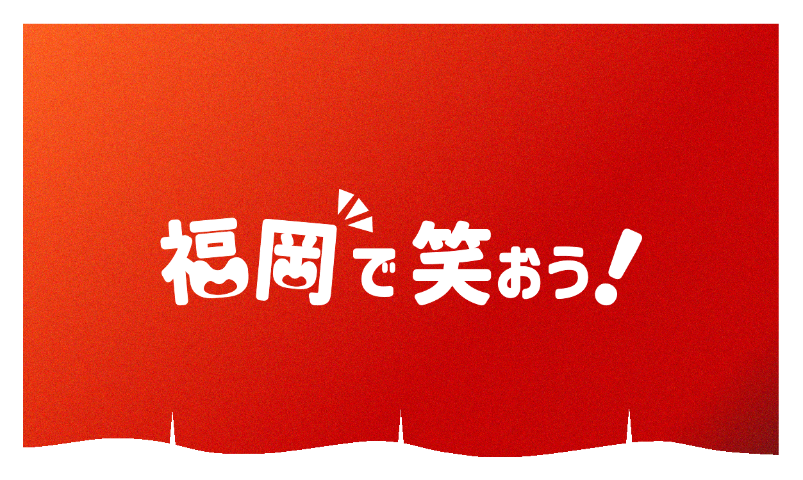

福岡の夜には、あたたかい灯りと笑い声がよく似合う。
屋台ののれんをめくるように、
ふらっと笑いに会いに行こう。
福岡のお笑いは、湯気のようにあたたかくて、
あなたの心をほぐしてくれる。
「福岡で笑おう！」は、
この街のお笑いライブをもっと身近に感じてもらうための場所。
笑いに出会い、味わい、また会いに行けるように。
さあ、笑っていきんしゃい。
お笑いライブって、
初めてだとちょっと緊張しますよね。
でも、屋台にふらっと立ち寄るような気持ちで大丈夫。
笑いの味わい方やマナーを、そっとご案内します。
準備が整ったら、あとは心をほぐして。
笑いの一杯に、乾杯。


おでんの具を選ぶみたいに、
「今日はどのライブにしようかな〜」なんて気分でOK。
福岡で開催されるお笑いライブのスケジュールをまとめました。
気になったライブがあったら、あたたかい笑いの湯気に誘われてみてください。
実際に行った感想をレポート！アツアツの熱気とワクワク感を伝えます。